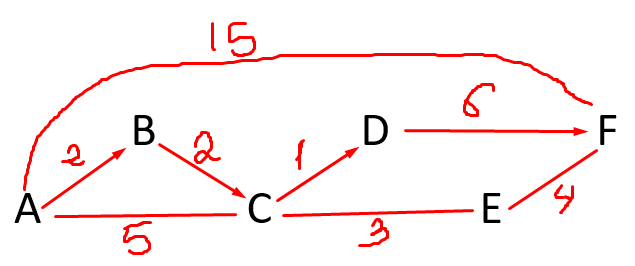
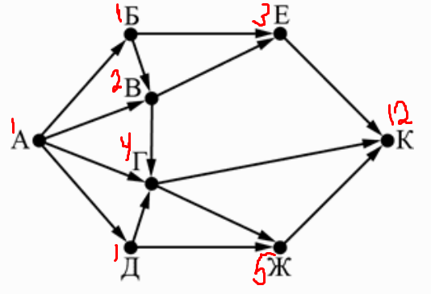

Вариант 1
Задание 1. В кодировке Windows-1251 каждый символ кодируется 8 битами.
Вова хотел написать текст (в нём нет лишних пробелов):
«Ом, Бор, Кюри, Попов, Джоуль, Рентген, Курчатов, Резерфорд – великие физики».
Фамилию одного учёного ученик написал два раза подряд, добавив необходимые запятую и пробел. При
этом размер написанного предложения в данной кодировке оказался на 8 байт больше, чем размер нужного
предложения. Напишите в ответе слово, использованное дважды.
Решение
1) Каждый символ кодируется 8 битами то есть 1 байт.
2) Предложения в данной кодировке оказался на 8 байт больше.
3) Значит: 8 : 1 = 8 символов, с учётом 2 двух символов (запятой и пробел)
4) 8 - 2 = 6 символов то есть Джоуль
Ответ: Джоуль
Задание 2. От разведчика была получена следующая шифрованная радиограмма,
переданная с использованием азбуки Морзе.
• – – – • • – – • • • • • – – •
При передаче радиограммы было потеряно разбиение на буквы, но известно, что в радиограмме
использовались только следующие буквы.
| М | Н | С | У | А |
| – – | – • | • • • | • • – | • – |
Определите текст радиограммы. В ответе запишите получившееся слово (набор букв).
Решение
Так как необходимо определить текст радиограммы, в ответе пишем набор букв.
• – / – – / • • – / – • / • • • / • – / – •
Ответ: АМУНСАН
Задание 3. Напишите натуральное число x, для которого ложно
высказывание:
(x < 4) ИЛИ НЕ (x < 5)
Решение
Так как высказывание должно быть ложным, то меняем знаки там где нет НЕ,
то есть меняем высказывание с ложного на истинное
Было: (x < 4) ИЛИ НЕ (x < 5) – высказывание ложно
Стало: (x >= 4) И (x < 5) – высказывание истинно
Ответ: 4
Задание 4. Между населёнными пунктами A, B, C, D, E, F построены дороги, протяжённость которых (в километрах) приведена в таблице.
| A | B | C | D | E | F | |
| A | 2 | 5 | 15 | |||
| B | 2 | 2 | ||||
| C | 5 | 2 | 1 | 3 | ||
| D | 1 | 6 | ||||
| E | 3 | 4 | ||||
| F | 15 | 6 | 4 |
Определите длину кратчайшего пути между пунктами A и F. Передвигаться можно только по
дорогам, указанным в таблице.
Решение

Найдем все варианты маршрутов из A в F и выберем самый короткий.
Из пункта A можно попасть в пункт B, C, F.
Из пункта B можно попасть в пункты C.
Из пункта C можно попасть в пункт D, E.
Из пункта D можно попасть в пункт F.
Из пункта E можно попасть в пункт F.
A—F: длина маршрута 15км.
A—B—C—E—F: длина маршрута 11км.
A—B—C—D—F: длина маршрута 11км.
A—C—E—F: длина маршрута 12км.
Самый короткий путь: A—B—C—D—F. Длина маршрута 11км.
Ответ: 11
Задание 5.
У исполнителя Делитель две команды, которым присвоены номера:
1. раздели на 2
2. прибавь 1
Первая из них уменьшает число на экране в 2 раза, вторая увеличивает его на 1. Исполнитель работает
только с натуральными числами.
Составьте алгоритм получения из числа 89 числа 24, содержащий не более 5 команд.
В ответе запишите только номера команд.
(Например, 21121 –
это алгоритм:
прибавь 1
раздели на 2
раздели на 2
прибавь 1
раздели на 2,
который преобразует число 75 в 10.)
Если таких алгоритмов более одного, то запишите любой из них.
Решение
Нужно составить алгоритм чтобы получить из числа 89 число 24.
Смотрим
89 делится на 2, нет, поэтому прибавляем 1
2. прибавь 1 = 90 делится на 2, да, поэтому делим на 2 и т. д.
1. раздели на 2 = 45
2. прибавь 1 = 46
1. раздели на 2 = 23
2. прибавь 1 = 24
24
Из числа 89 получили число 24, в ответе записываем номера команд из условия задачи.
Ответ: 21212
Задание 6.
Решение
Ответ: 4
Задание 7.
Доступ к файлу ftp.jpg, находящемуся на сервере text.net, осуществляется по протоколу
ftp. Фрагменты
адреса файла закодированы цифрами от 1 до 7. Запишите последовательность этих цифр, кодирующую адрес
указанного файла в сети Интернет.
1) .net
2) jpg
3) ftp.
4) //
5) ftp:
6) /
7) text
Решение
Протокол :// Сервер / Файл
ftp :// text.net / ftp.jpg
Ответ: 5471632
Задание 8. В языке запросов поискового сервера для
обозначения логической операции «ИЛИ» используется символ «|», а для логической операции «И» –
символ «&».
В таблице приведены запросы и количество найденных по ним страниц некоторого
сегмента сети Интернет.
| Запрос | Найдено страниц (в тысячах) |
| Пшеница | Овёс | 6400 |
| Пшеница & Овёс | 550 |
| Пшеница | 4300 |
Какое количество страниц (в тысячах) будет найдено по запросу
Овёс?
Считается, что все запросы выполнялись практически одновременно, так что набор
страниц, содержащих все искомые слова, не изменялся за время выполнения запросов.
Решение
В таблице запросов видим что есть два запроса Пшеница и Овёс.
Смотрим и в первой и во второй строке видим что есть знаки операции: символ «|» и символ «&», в
третьей строке
нет знаков операции.
Поэтому складываем Первый и Второй запрос и отнимаем Третий.
( Пшеница | Овёс ) + ( Пшеница & Овёс ) - ( Пшеница )
6400 + 550 - 4300 = 2650
Ответ: 2650
Задание 9.
На рисунке – схема дорог, связывающих города А, Б, В, Г, Д, Е, Ж и К. По каждой дороге можно
двигаться только в одном направлении, указанном стрелкой. Сколько существует различных путей из
города А в город К?

Решение

Ответ: 12
Задание 10.
Переведите число 105 из десятичной системы счисления в двоичную систему счисления. Сколько единиц
содержит полученное число?
В ответе укажите одно число – количество единиц.
Решение

Пишем остатки в обратном порядке: 1101001
В ответе нужно указать сколько единиц в двоичной записи
Ответ: 4